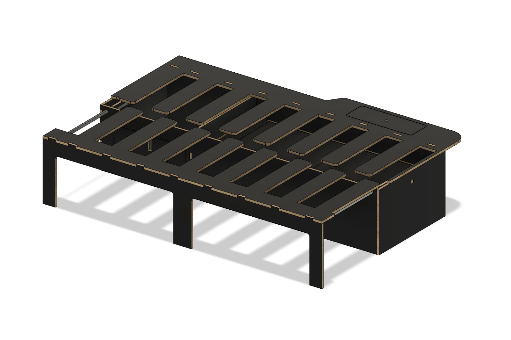
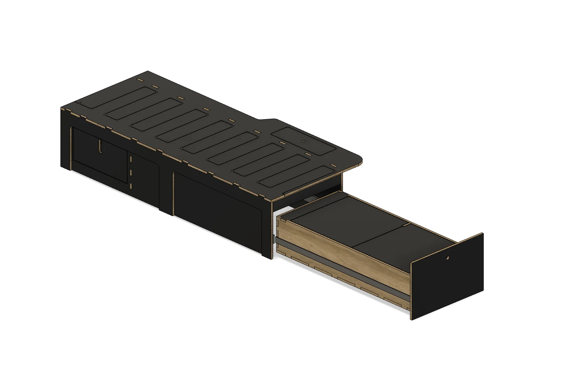
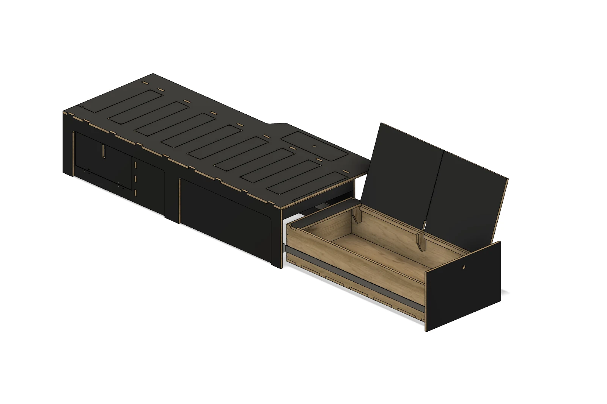
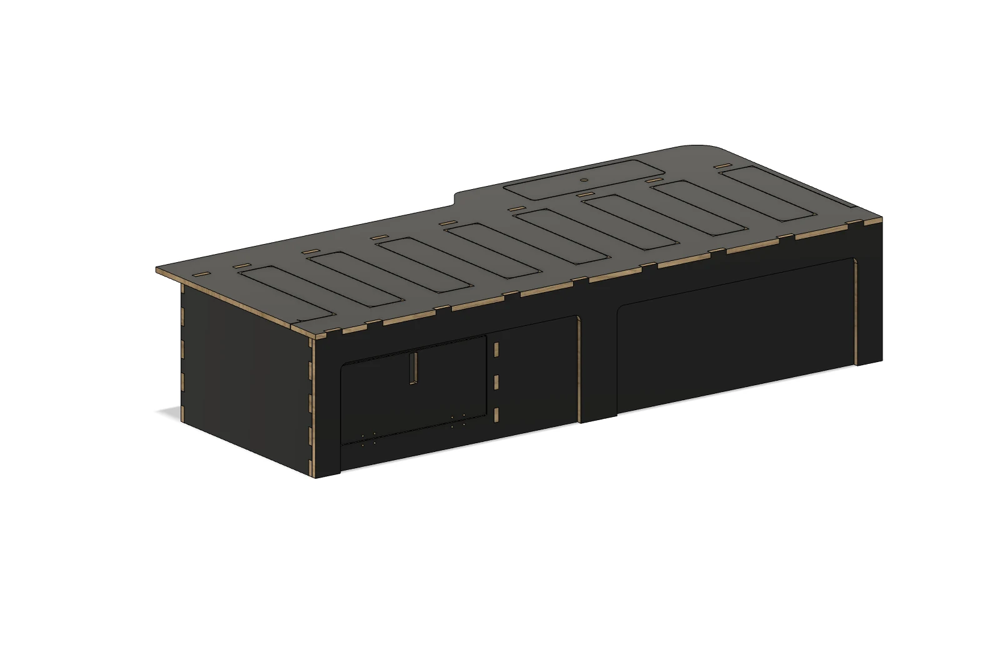
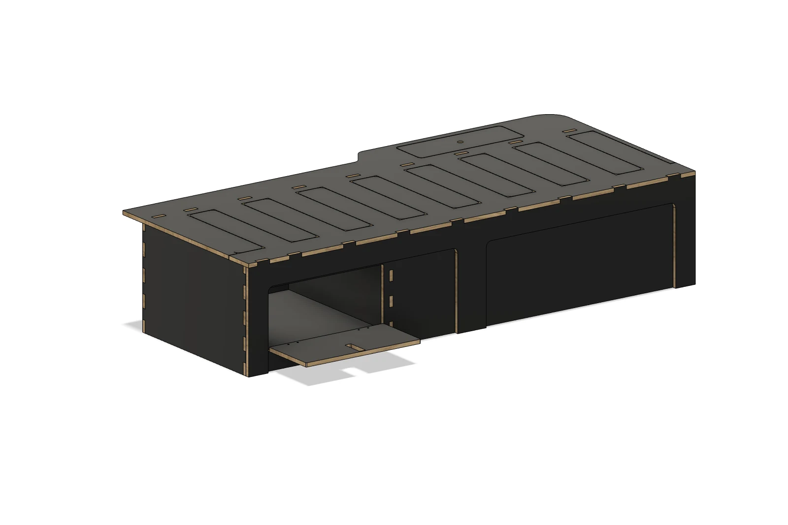

モジュール一覧 / 収納付きスライドアウトベッドMODULE 07 / 11
Slide-out bed with storage
PLYWOOD収納付きスライドアウトベッド
後ろからも、室内からも、使える収納。
工具などを収納できる後部の引き出しと、室内側から使える収納を備えたスライドアウト式のベッド。横へ広げて使えるほか、ベッドを収めたままでも室内側の収納にアクセスできます。
Slide-out bed with storage ヘキサ合板
ヘキサ合板
ヘキサ合板01
広げる横へ500mmスライドしてベッド面を拡張
02
引き出す後部引き出し＋110度の上開き天板
03
室内からスライド収納時も前方収納へアクセス
01 / SLIDE OUT
使うときに、横へ広げる。
同じ角度から、スライドインとスライドアウトを比較できます。

02 / REAR DRAWER
引き出した先に、天板と収納。
後部引き出しの天板は2枚に分かれ、壁側へ110度開きます。


03 / INSIDE ACCESS
ベッドを収めたまま、室内から。
スライドを閉じていても、前方の収納扉は開閉できます。


DETAILS
モジュールの内容
- 合板の仕上げ
- ヘキサ合板（ブラック）／バーチ合板
- 合板の小口
- どちらの仕様も木の色・木目
- 長さ・高さ
- 長さ1816 × 高さ396mm
- ベッド幅（最大）
- 収納時816mm ／ 展開時1316mm
- 横へのスライド
- 500mm
- 後部引き出し
- 1200mm引き出し・2分割の上開き天板
- 天板の開き角
- 壁側を吊元に110度
- 板厚・仕上げ
- 15mm ／ 表板・天板はヘキサ／バーチ、内箱は木目で共通
- 前方収納
- ベッドをスライドインしたまま室内側からアクセス